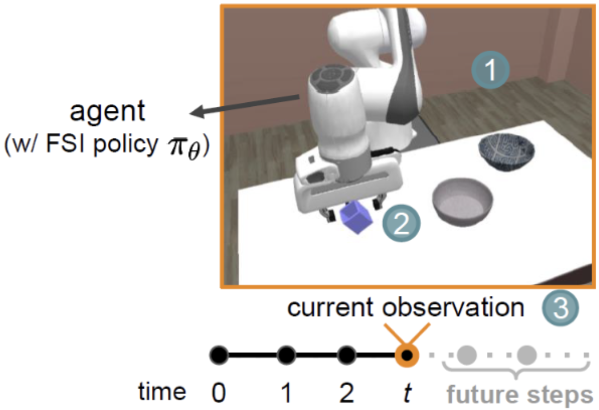

|
Kuo-Han (Johnson) Hung I am a senior undergrad majoring in Computer Science at National Taiwan University. I am advised by Prof. Winston H. Hsu and Prof. Yun-Nung (Vivian) Chen. My primary research interests lie in robot learning and multi-modal learning, and I have also conducted research in trustworthy AI. Email / CV / Google Scholar / Github / LinkedIn |

|
ResearchI'm boardly interesteed in machine learning, robotics, multi-modal learning, and trustworthy AI. |
|
|
VICtoR: Learning Hierarchical Vision-Instruction Correlation Rewards for Long-horizon Manipulation
Kuo-Han Hung*, Pang-Chi Lo*, Jia-Fong Yeh*, Han-Yuan Hsu, Yi-Ting Chen, Winston H. Hsu ICML 2024 workshop: Aligning Reinforcement Learning Experimentalists and Theorists paper Existing Vision-Instruction Correlation (VIC) reward models struggle with training for long-horizon tasks. We propose VICtoR, a new reward model for long-horizon robotic reinforcement learning that assigns rewards hierarchically. |
|

|
AED: Adaptable Error Detection for Few-shot Imitation Policy
Jia-Fong Yeh, Kuo-Han Hung*, Pang-Chi Lo*, Chi-Ming Chung, Tsung-Han Wu, Hung-Ting Su, Yi-Ting Chen, Winston H Hsu Preprint paper The novel adaptable error detection (AED) problem is formulated for monitoring few-shot imitation policies' behaviors, and we propose PrObe to address the challenging problem by learning from the policy's feature representations. |
|
|
Open-domain conversational question answering with historical answers
Hung-Chieh Fang*, Kuo-Han Hung*, Chao-Wei Huang, Yun-Nung Chen AACL 2022 paper / code Open-domain conversational question answering combines passage retrieval and answering, with ConvADR-QA leveraging historical answers to improve both tasks. Our model outperforms baselines on OR-QuAC by reducing noise through a teacher-student framework. |
Professional Experience |

|
Summer 2024 Advised by Dr. Pin-Yu Chen. Research in trustworthy AI. |

|
Jul. 2023 - Jun. 2024 Integrated Bing Maps services and context-aware map search system with Microsoft Copilot for complicated map quires. Developed a new path finding algorithm that learns from historical data to achieve over a 10x speedup. |
|
Website template is adapted from here. |